26. 质量控制#
关键要点
使用两种正交的方法进行稳健的双联体（doublet）打分：一种利用模拟双联体的计数分布，另一种利用计数大于 2 的基因组位置的数量。请记住，后者要求有足够的测序深度（每个细胞 > 10–15k 条读段）。
使用片段总数、特征数量，以及 scATAC 特有的指标（如转录起始位点 TSS 富集分数和核小体信号），来识别低质量细胞。删除在任一 QC 指标上取值极端的条形码（大多是上限阈值）。去除大多数低质量细胞——它们主要表现为片段总数低，并伴随每个细胞的 TSS 富集分数低。
在过滤特征时，要考虑数据集中的细胞总数和分析目标。如果不关心稀有细胞状态，可以把特征过滤为至少出现在 1% 的细胞中。如果关心稀有细胞群体，则考虑设定一个“特征至少应在多少个细胞中被检测到”的最小细胞数。
环境设置
安装 conda:
在创建环境之前，请确保 conda 已安装在您的系统中。
保存 yml 内容:
将 yml 选项卡中的内容复制到名为
environment.yml的文件中。
创建环境:
打开终端或命令提示符。
运行以下命令：
conda env create -f environment.yml
激活环境:
创建好环境后，使用以下命令激活它：
conda activate <environment_name>
替换
<environment_name>，名称就是在environment.yml文件中指定的那个。在 yml 文件里，它看起来像这样：name: <environment_name>
验证安装:
通过运行以下命令，检查环境是否创建成功：
conda env list
获取数据和笔记本
本书使用 lamindb，并通过 theislab/sc-best-practices 实例 来存储、共享和加载数据集与笔记本。感谢 Lamin Labs 提供免费托管服务。
安装 lamindb
安装 lamindb Python 软件包：
pip install lamindb
可选择创建 lamin 账户
按照以下 说明 注册并登录。
验证你的设置
运行
lamin connect命令：
import lamindb as ln ln.Artifact.connect("theislab/sc-best-practices").df()
你现在应该看到最多100个存储的数据集。
访问数据集（Artifact）
在 Artifacts 页面 搜索该数据集。
加载一个 Artifact 及其对应的对象：
import lamindb as ln af = ln.Artifact.connect("theislab/sc-best-practices").get(key="key_of_dataset", is_latest=True) obj = af.load()
该对象现在已可在内存中访问，并可用于分析。请调整
ln.Artifact.connect("theislab/sc-best-practices").get("SOMEIDXXXX")后缀以获取相应的版本。访问笔记本（Transform）
在 Transforms 页面 搜索该笔记本。
加载笔记本：
lamin load <notebook url>
这会把笔记本下载到当前工作目录。与
Artifacts类似，你可以调整后缀 ID 来获取旧版本。
26.1. 动机#
每个单细胞分析中一个关键的环节，是去除可能扭曲下游分析结果的低质量细胞。scATAC-seq 数据每个细胞中只检测到 1–10% 的开放染色质区域，因此比 scRNA-seq 数据还要稀疏 [Chen et al., 2019]。因此，每个细胞测序深度低、或信噪比差等质量问题，可能导致没有信息量的观测（细胞）。另一个挑战是检测多联体（multiplet，即两个或更多细胞被一起测到）。在接下来的一章中，我们将介绍 scATAC-seq 数据质量控制（QC）的指标，并介绍双联体检测方法。
26.2. 数据集#
为了展示 scATAC-seq 数据的处理，我们使用一个 10x Multiome 数据集，它是为 2021 年 NeurIPS 会议上的单细胞数据整合挑战赛而生成的 [Luecken et al., 2021]。请注意，这个数据集包含多个样本，因此在联合分析之前，特征协调和整合是需要考虑的重要问题（在后续章节讨论）。不过，最无偏的质量评估可以通过单独检查每个样本来获得。因此，本笔记本中我们描述对其中一个选定样本的预处理。
我们的起点是 cellranger-arc的输出，这是 10x 用于对其 10x Multiome 测定进行比对、识别峰（peak calling）和初始 QC 的软件方案。默认情况下，输出文件包含 snRNA-seq 和 scATAC-seq 数据。由于 scRNA-seq 或 snRNA-seq 数据的预处理在前几章已有详尽描述，这里我们只讨论染色质可及性数据的处理（这些处理也适用于单模态 scATAC-seq 测定的数据）。
我们加载的主要文件是 filtered_feature_bc_matrix.h5，它包含“细胞 × 峰”的计数矩阵。加载时，我们利用 muon 的功能自动检测同一目录中相应的片段文件和峰注释文件。
要启动，我们导入所有所需的 Python 包。
# Single-cell packages
import anndata2ri
import matplotlib.pyplot as plt
import muon as mu
import numpy as np
# General helpful packages for data analysis and visualization
import pandas as pd
import scanpy as sc
import seaborn as sns
from muon import atac as ac # the module containing function for scATAC data processing
# Packages enabling to run R code
from rpy2.robjects import pandas2ri
pandas2ri.activate() # Automatically convert rpy2 outputs to pandas DataFrames
anndata2ri.activate()
%load_ext rpy2.ipython
# Setting figure parameters
sc.settings.verbosity = 0
sns.set(rc={"figure.figsize": (4, 3.5), "figure.dpi": 100})
sns.set_style("whitegrid")
The rpy2.ipython extension is already loaded. To reload it, use:
%reload_ext rpy2.ipython
mdata = mu.read_10x_h5("cellranger_out/filtered_feature_bc_matrix.h5")
/Users/christopher.lance/mambaforge/envs/scatac_pp/lib/python3.9/site-packages/anndata/_core/anndata.py:1830: UserWarning: Variable names are not unique. To make them unique, call `.var_names_make_unique`.
utils.warn_names_duplicates("var")
Added `interval` annotation for features from resources/cellranger_out/filtered_feature_bc_matrix.h5
/Users/christopher.lance/mambaforge/envs/scatac_pp/lib/python3.9/site-packages/anndata/_core/anndata.py:1830: UserWarning: Variable names are not unique. To make them unique, call `.var_names_make_unique`.
utils.warn_names_duplicates("var")
/Users/christopher.lance/mambaforge/envs/scatac_pp/lib/python3.9/site-packages/mudata/_core/mudata.py:446: UserWarning: var_names are not unique. To make them unique, call `.var_names_make_unique`.
warnings.warn(
Added peak annotation from resources/cellranger_out/atac_peak_annotation.tsv to .uns['atac']['peak_annotation']
Added gene names to peak annotation in .uns['atac']['peak_annotation']
Located fragments file: resources/cellranger_out/atac_fragments.tsv.gz
正如警告信息所示，峰标识符并不唯一。为了避免下游分析步骤出问题，我们使用 .var_names_make_unique() 方法使它们唯一。
mdata.var_names_make_unique()
让我们看看我们刚刚生成的 MuData 对象。
mdata
MuData object with n_obs × n_vars = 16934 × 190628
var: 'gene_ids', 'feature_types', 'genome', 'interval'
2 modalities
rna: 16934 x 36601
var: 'gene_ids', 'feature_types', 'genome', 'interval'
atac: 16934 x 154027
var: 'gene_ids', 'feature_types', 'genome', 'interval'
uns: 'atac', 'files'两种模态（RNA 和 ATAC）已被加载为两个 AnnData 对象。总共加载了 16934 个细胞，RNA 有 36601 个基因、ATAC 有 154027 个峰。ATAC 模态还在非结构化数据槽中额外包含两个条目 atac.uns 其中包含峰注释，以及自动定位到的片段文件路径 muon.
让我们看看 atac.uns 槽，打印峰注释和片段文件路径。
mdata.mod["atac"].uns
OverloadedDict, wrapping:
OrderedDict([('atac', {'peak_annotation': peak distance peak_type
gene_name
MIR1302-2HG chr1:9763-10648 -18906 distal
AL627309.1 chr1:115270-116168 4764 distal
AL627309.5 chr1:181107-181768 -7246 distal
AL627309.5 chr1:183973-184845 -10112 distal
AL627309.5 chr1:191237-192111 -17376 distal
... ... ... ...
AC213203.2 KI270713.1:21361-22256 10272 distal
AC213203.2 KI270713.1:29645-30508 2020 distal
AC213203.2 KI270713.1:32401-33088 0 promoter
AC213203.1 KI270713.1:34369-35136 -271 promoter
AC213203.1 KI270713.1:36970-37884 1564 distal
[196633 rows x 3 columns]}), ('files', {'fragments': 'resources/cellranger_out/atac_fragments.tsv.gz'})])
With overloaded keys:
['neighbors'].
由峰注释文件生成的表格，给出了“哪些基因可能与某个给定峰相关”的初步线索。不过，这纯粹基于到最近基因的距离，应当谨慎对待。
为了以后的处理，我们提取与 ATAC 模态对应的 Anndata 对象：
atac = mdata.mod["atac"]
26.3. 双细胞检测#
与 scRNA-seq 数据相比，scATAC 数据的稀疏性要高得多。因此，不建议直接把为 scRNA-seq 开发的方法套用到 scATAC-seq 数据上。这里，我们介绍两种用于双联体打分的正交方法，它们之后可用于检测含有双联体的细胞聚类。这两种方法都在 R 包 scDoubletFinder 中实现 [Germain et al., 2021] ；以下步骤改编自 此教程.
方法 1：基于模拟双联体的双联体打分： 原生的 scDoubletFinder 方法利用模拟双联体来赋予双联体分数（参见 双细胞检测). 在生成双联体之前，会先把高度相关的特征聚合起来，以降低稀疏性并减少特征数量。与处理 scRNA-seq 数据的方法一样，这种方法检测的是异型双联体（不同细胞类型的混合）。
方法 2：使用 AMULET 的基于覆盖度的双联体打分 [Thibodeau et al., 2021]：由于在二倍体生物中 DNA 只以两份拷贝存在，对于基因组中任意给定位置，可以预期最大计数为 2。AMULET 利用这一特性，统计某个给定位置上“重叠片段多于两个”的情形的数量（见下图）。这类情形数量异常地高，就提示存在双联体（由于重复（duplication）错误、测序和比对错误、或重复序列内容等原因，预计会有少数位置存在多于两个的重叠片段）。AMULET 在测序深度充足（每个细胞 > 10–15k 条读段）时表现最好，并且能够捕捉异型（heterotypic）和同型（homotypic，即相同细胞类型）的双联体。
{kind=link}
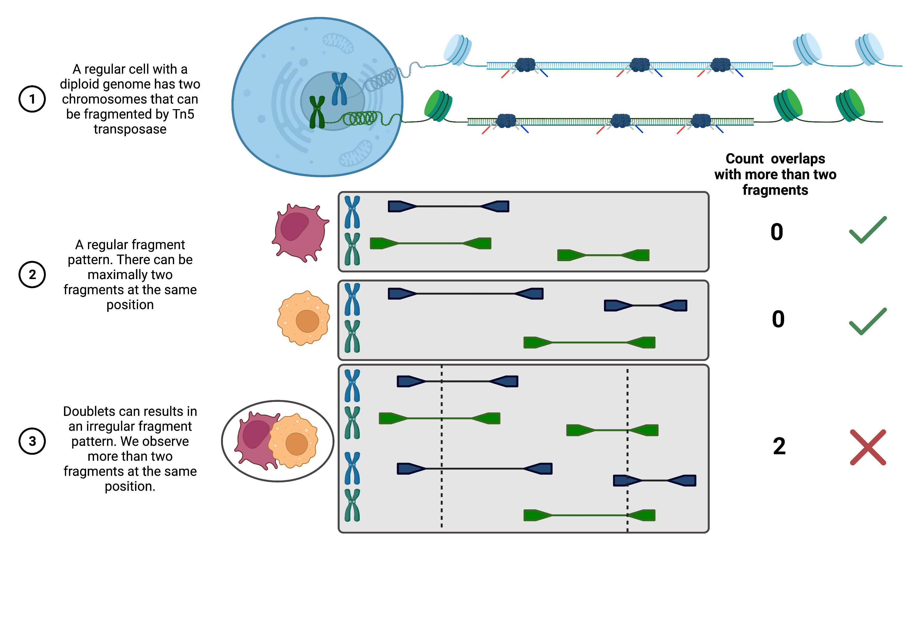
图26.1 AMULET 方法概述。#
在运行双联体检测之前，我们先确保 R 使用的是指向我们所安装环境的正确路径。
%%R
.libPaths()
[1] "/Users/christopher.lance/mambaforge/envs/scatac_pp/lib/R/library"
加载 scDblFinder 和 SingleCellExperiment 软件包。
%%R
suppressPackageStartupMessages(library(scDblFinder))
suppressPackageStartupMessages(library(SingleCellExperiment))
26.3.1. 基于计数分布的双联体打分#
由于双联体评分需要一段时间，我们指定路径和样本标识符来保存输出。
# Set output paths
save_path_dir = "output/doublet_scores/"
sample_ident = "s4d8"
能够将我们的数据矩阵传输到 SingleCellExperiment R 对象，我们对其进行转置（.T）并把 atac.X 槽中的稀疏矩阵转换为数组（.A). 此外，我们保存条形码作为一个单独的列表。
barcodes = list(atac.obs_names)
data_mat = atac.X.T.A
scDblFinder 方法作用于 SingleCellExperiment 对象，该对象由我们的 data_mat 对象创建。用户需要决定双联体检测应当基于聚类进行（通过使用 clusters 等参数），还是使用随机细胞。如果预期会有易于区分的细胞群体（例如 PBMC），推荐使用基于聚类的打分；而如果预期是连续轨迹，则不推荐。你可以为每个细胞指定一个聚类标签向量（以提供预先注释好的聚类），或指定 SingleCellExperiment 中含有此类标签的一个元数据列，或 TRUE。如果不想使用聚类、而是随机采样，可以设置 clusters=FALSE 或 clusters=NULL。由于使用所有特征（峰或 bin）在计算上非常昂贵，作者建议把相关的特征聚合成一小组 [Germain et al., 2021]设置 aggregateFeatures=TRUE组合到 nfeatures 元特征（meta-feature）。建议使用少量特征，我们用 25 个。最后一步，对聚合后的特征做归一化 processing="normFeatures" ，之后再计算双联体分数。
%R -i data_mat -o dbl_score sce <- scDblFinder(SingleCellExperiment(list(counts=data_mat)), \
clusters=TRUE, aggregateFeatures=TRUE, nfeatures=25, \
processing="normFeatures"); dbl_score <- sce$scDblFinder.score
R[write to console]: dimnames(.) <- NULL translated to
dimnames(.) <- list(NULL,NULL)
R[write to console]: Aggregating features...
R[write to console]: Clustering cells...
R[write to console]: Warnung in (function (A, nv = 5, nu = nv, maxit = 1000, work = nv + 7, reorth = TRUE,
R[write to console]:
R[write to console]: You're computing too large a percentage of total singular values, use a standard svd instead.
R[write to console]: 8 clusters
R[write to console]: Creating ~13548 artificial doublets...
R[write to console]: Dimensional reduction
R[write to console]: Evaluating kNN...
R[write to console]: Training model...
R[write to console]: iter=0, 2617 cells excluded from training.
R[write to console]: iter=1, 2725 cells excluded from training.
R[write to console]: iter=2, 2756 cells excluded from training.
R[write to console]: Threshold found:0.466
R[write to console]: 3038 (17.9%) doublets called
/Users/christopher.lance/mambaforge/envs/scatac_pp/lib/python3.9/site-packages/anndata2ri/r2py.py:106: FutureWarning: X.dtype being converted to np.float32 from float64. In the next version of anndata (0.9) conversion will not be automatic. Pass dtype explicitly to avoid this warning. Pass `AnnData(X, dtype=X.dtype, ...)` to get the future behavour.
return AnnData(exprs, obs, var, uns, obsm or None, layers=layers)
array([0.02819141, 0.00082514, 0.06341238, ..., 0.15534039, 0.02116382,
0.12427134])
根据输出信息，大约 18% 的细胞被判定为双联体。这听起来比例很高，但考虑到这个样本加载的细胞数量、以及分离出的细胞核往往会粘连在一起，这是合理的。
一旦计算完成，让我们创建一个 pandas.DataFrame 包含所有条形码的分数并将其保存为文件。
scDbl_result = pd.DataFrame({"barcodes": barcodes, "scDblFinder_score": dbl_score})
scDbl_result.to_csv(save_path_dir + "/scDblFinder_scores_" + sample_ident + ".csv")
scDbl_result.head()
| barcodes | scDblFinder_score | |
|---|---|---|
| 0 | AAACAGCCAAGCTTAT-1 | 0.028191 |
| 1 | AAACAGCCATAGCTTG-1 | 0.000825 |
| 2 | AAACAGCCATGAAATG-1 | 0.063412 |
| 3 | AAACAGCCATGTTTGG-1 | 0.026449 |
| 4 | AAACATGCAACGTGCT-1 | 0.019928 |
为了把分数加到我们的 ATAC AnnData 对象，我们将条形码设为数据框的索引，使其对应到 adata.obs.
scDbl_result = scDbl_result.set_index("barcodes")
现在我们可以把该列加到 adata.obs.
atac.obs["scDblFinder_score"] = scDbl_result["scDblFinder_score"]
26.3.2. 基于覆盖度的双联体打分#
如前所述，AMULET 根据片段覆盖度大于 2 的基因组位置数量来估计双联体分数。由于这一假设基于二倍体基因组，我们按照 [Thibodeau et al., 2021] 的建议排除线粒体基因（一个细胞可以拥有许多份线粒体 DNA 拷贝）和性染色体。此外，我们还想屏蔽基因组中的重复序列（如散在核元件 interspersed nuclear element 或卫星重复 satellite repeat）。为此，我们下载了 AMULET 论文随附并托管在 Zenodo 上的 .bed 文件，并用 R 包 rtracklayer 加载它，从而直接创建 GRanges R 对象。请注意，对于这个约有 16k 个细胞的样本，AMULET 在个人电脑上运行大约需要 4 小时（重复元件的 .bed 文件和 AMULET 输出也在 figshare 上提供）。
%%R
# Set up a GRanges objects of repeat elements, mitochondrial genes and sex chromosomes we want to exclude
suppressPackageStartupMessages(library(GenomicRanges))
suppressPackageStartupMessages(library(rtracklayer))
repeats = import('resources/blacklist_repeats_segdups_rmsk_hg38.bed')
otherChroms <- GRanges(c("chrM","chrX","chrY","MT"),IRanges(1L,width=10^8)) # check which chromosome notation you are using c("M", "X", "Y", "MT")
toExclude <- suppressWarnings(c(repeats, otherChroms))
此外，我们需要定义片段文件的路径。
frag_path = atac.uns["files"]["fragments"]
frag_path
'resources/cellranger_out/atac_fragments.tsv.gz'
现在我们准备运行 AMULET。请注意，我们从 Python 环境传入对象，并定义随后会用到的输出，使用的是 -i 和 -o 标签跟着 %R 魔术，而 toExclude 对象已经可供 amulet 函数使用，因为我们是在上面的 R 环境中生成它的。（如果你有更大的可用内存，可以查看 fullInMemory=TRUE 选项以加快运行时间。)
# Run AMULET
%R -i frag_path -o amulet_result amulet_result <- amulet(frag_path, regionsToExclude=toExclude)
# Save output
amulet_result.to_csv(save_path_dir + "/AMULET_scores_" + sample_ident + ".csv")
R[write to console]: 18:01:17 - Reading Tabix-indexed fragment file and computing overlaps
chr1, chr10, chr11, chr12, chr13, chr14, chr15, chr16, chr17, chr18, chr19, chr2, chr20, chr21, chr22, chr3, chr4, chr5, chr6, chr7, chr8, chr9, chrX, chrY, KI270728.1, KI270727.1, GL000009.2, GL000194.1, GL000205.2, GL000195.1, GL000219.1, KI270734.1, GL000213.1, GL000218.1, KI270731.1, KI270721.1, KI270726.1, KI270711.1, KI270713.1,
R[write to console]: 22:20:44 - Merging
让我们来看看AMULET的产出。
amulet_result.head()
| nFrags | uniqFrags | nAbove2 | total.nAbove2 | p.value | q.value | |
|---|---|---|---|---|---|---|
| AAACAGCCAAGCTTAT-1 | 1696.0 | 1696.0 | 0.0 | 0.0 | 0.994851 | 0.994851 |
| AAACAGCCATGAAATG-1 | 2536.0 | 2536.0 | 0.0 | 1.0 | 0.994851 | 0.994851 |
| AAACAGCCATGTTTGG-1 | 3464.0 | 3464.0 | 1.0 | 6.0 | 0.967723 | 0.994851 |
| AAACATGCAACGTGCT-1 | 3602.0 | 3602.0 | 0.0 | 2.0 | 0.994851 | 0.994851 |
| AAACATGCAATATAGG-1 | 3893.0 | 3893.0 | 1.0 | 3.0 | 0.967723 | 0.994851 |
对于每个条形码，我们得到了片段数、被多于两个片段覆盖的位点数，以及检验“该细胞为单细胞（singlet）”这一零假设的 p 值和 q 值。该值越低， q-value 相应的细胞就越可能是双联体。可以选定一个常用的显著性阈值来自动定义双联体，但我们更倾向于稍后把 AMULET 分数可视化，并手动寻找双联体的群体。
我们现在把分数加到 atac 对象中，并对它们做变换以便更好地绘图。
atac.obs["AMULET_pVal"] = amulet_result["p.value"]
atac.obs["AMULET_qVal"] = amulet_result["q.value"]
# Transform q-values for nicer plotting
atac.obs["AMULET_negLog10qVal"] = -1 * np.log10(amulet_result["q.value"])
/Users/christopher.lance/mambaforge/envs/scatac_pp/lib/python3.9/site-packages/pandas/core/arraylike.py:402: RuntimeWarning: divide by zero encountered in log10
result = getattr(ufunc, method)(*inputs, **kwargs)
现在我们来绘制从这两种方法得到的分数。
atac.obs.plot(x="scDblFinder_score", y="AMULET_negLog10qVal", kind="scatter")
plt.title("Association of doublet scores")
plt.show()
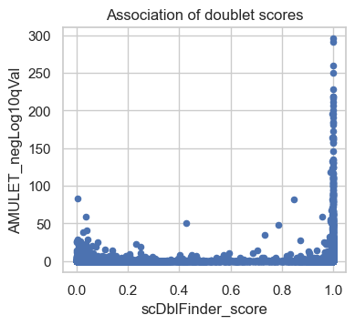
散点图比较了每个条形码的 AMULET 校正后 P 值与 scDblFinder 分数。向图右上象限上升的点，代表两种方法都把该细胞判为双联体的条形码；左下象限的点，表示 AMULET 和 scDblFinder 分数都认为是有效细胞的条形码；右下象限的点，对应仅由 scDblFinder（基于计数分布）判定为双联体的条形码。左上象限上方还有少数点，被 AMULET 判为双联体、但 scDblFinder 未判为双联体，它们可能对应同型双联体（只能被 AMULET 检测到，基于计数的方法无法检测）。我们计划在后续步骤中同时利用这两个分数来识别双联体聚类。
26.4. 计算 QC 指标#
为了检测低质量细胞，我们需要定义一些指标，使我们能够把高质量细胞与低质量细胞区分开。下面概述在多条 scATAC-seq 处理流程中常用的主要 QC 指标：
total_fragment_counts：每个细胞的片段总数，代表细胞的测序深度。这一指标类似于 scRNA-seq 数据中的总计数。
tss_enrichment：转录起始位点（TSS）富集分数，即位于 TSS 中心的片段数与 TSS 两侧区域片段数之比。这一指标可以理解为每个细胞的信噪比。
n_features_per_cell：每个细胞中计数非零的峰的数量。这一指标类似于 scRNA-seq 数据中检测到的基因数。
nucleosome_signal：核小体信号（nucleosome signal）指单核小体片段与无核小体片段之比，同样可以理解为每个细胞的信噪比（详见下文）。
可考虑的其他衡量标准:
reads_in_peaks_frac: 峰区域内片段与峰区域外片段之比。与 TSS 分数类似，这也是信噪比的一个指标。
blacklist_fraction: 落在基因组黑名单区域（由 ENCODE 定义、与人为假象信号相关）内的片段比例。关于单细胞 ATAC-seq 数据处理的基准研究 [Chen et al., 2019] 以及根据我们自己的经验，读段比对到黑名单区域通常不是单细胞数据中的一个大问题。
除了细胞层面的 QC 指标，我们还建议评估样本层面的质量，例如评估每个样本检测到的细胞数，并比较细胞层面指标的分布。对于后者，按样本分组的小提琴图信息量很大。
26.4.1. 碎片总数和特征数量#
为了获得第一个指标，我们利用 scanpy 中的 calculate_qc_metrics 函数来计算每个细胞的片段总数和特征数。由于 scanpy 按 RNA-seq 数据来命名这些指标，我们会修改变量名，使其契合 scATAC-seq 数据，即 total_counts 变成 total_fragment_counts 和 n_genes_by_counts 变成更通用的 n_features_per_cell。此外，我们对 total_fragment_counts进行对数变换，这往往有助于绘图。
# Calculate general qc metrics using scanpy
sc.pp.calculate_qc_metrics(atac, percent_top=None, log1p=False, inplace=True)
# Rename columns
atac.obs.rename(
columns={
"n_genes_by_counts": "n_features_per_cell",
"total_counts": "total_fragment_counts",
},
inplace=True,
)
# log-transform total counts and add as column
atac.obs["log_total_fragment_counts"] = np.log10(atac.obs["total_fragment_counts"])
26.4.2. 核小体信号#
接下来，我们计算 scATAC 特有的 QC 指标：核小体信号和 TSS 富集分数。
对于核小体信号，用于计算该指标的默认片段数 n 为 10e4 × n_cells（每个细胞）。由于这样计算很耗时，我们把它减小为原来的 1/10，仍能得到不错的估计。不过，在生产流程中我们仍建议保持默认值。
# Calculate the nucleosome signal across cells
# set n=10e3*atac.n_obs for rough estimate but faster run time
ac.tl.nucleosome_signal(atac, n=10e3 * atac.n_obs)
Reading Fragments: 100%|██████████████████████████████████████████████████████████████████████████████████████████████████████████████████████████████████| 169340000/169340000 [08:54<00:00, 317005.72it/s]
为了更好地理解这一指标，我们先看看其总体分布。
sns.histplot(atac.obs, x="nucleosome_signal")
plt.title("Distribution of the nucleome signal")
plt.show()
# Alternatively as a violin plot (uncomment to plot)
# sc.pl.violin(atac, "nucleosome_signal")
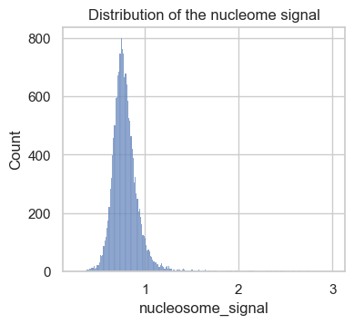
在这个数据集中，得到的分数范围是 0 到 3。根据经验，以往的分析项目会选取 2 到 4 之间的阈值来标记低质量细胞。现在我们来仔细看看核小体信号指标高和低的细胞。为此，我们在 atac.obs 中增加一列，包含这两类的分类。
# Add group labels for above and below the nucleosome signal threshold
nuc_signal_threshold = 2
atac.obs["nuc_signal_filter"] = [
"NS_FAIL" if ns > nuc_signal_threshold else "NS_PASS"
for ns in atac.obs["nucleosome_signal"]
]
# Print number cells not passing nucleosome signal threshold
atac.obs["nuc_signal_filter"].value_counts()
NS_PASS 16877
NS_FAIL 57
Name: nuc_signal_filter, dtype: int64
atac.obs["nuc_signal_filter"] # = atac.obs["nuc_signal_filter"].astype('category')
AAACAGCCAAGCTTAT-1 NS_PASS
AAACAGCCATAGCTTG-1 NS_PASS
AAACAGCCATGAAATG-1 NS_PASS
AAACAGCCATGTTTGG-1 NS_PASS
AAACATGCAACGTGCT-1 NS_PASS
...
TTTGTTGGTGGCTTCC-1 NS_PASS
TTTGTTGGTTCTTTAG-1 NS_PASS
TTTGTTGGTTGGCCGA-1 NS_PASS
TTTGTTGGTTTACTTG-1 NS_PASS
TTTGTTGGTTTGTGGA-1 NS_PASS
Name: nuc_signal_filter, Length: 16934, dtype: object
可以看到，这个样本只包含 57 个核小体信号高于 2 的条形码。
接下来，我们绘制每组细胞的片段长度分布。为了加快绘图的生成，我们通过设定只分析比对到 1 号染色体上某一区域的片段。region="chr1:1-2000000".
# Plot fragment size distribution
p1 = ac.pl.fragment_histogram(
atac[atac.obs["nuc_signal_filter"] == "NS_PASS"], region="chr1:1-2000000"
)
p2 = ac.pl.fragment_histogram(
atac[atac.obs["nuc_signal_filter"] == "NS_FAIL"], region="chr1:1-2000000"
)
Fetching Regions...: 100%|████████████████████████████████████████████████████████████████████████████████████████████████████████████████████████████████████████████████████| 1/1 [00:01<00:00, 1.57s/it]
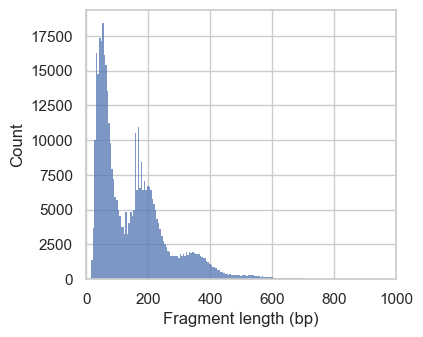
Fetching Regions...: 100%|████████████████████████████████████████████████████████████████████████████████████████████████████████████████████████████████████████████████████| 1/1 [00:01<00:00, 1.53s/it]
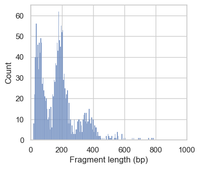
在第一组直方图中，我们看到周期性递减的峰，对应于无核小体区（<100bp）、单核小体、双核小体以及少量三核小体长度的片段。在高质量的 ATAC-seq 数据中，我们预期来自无核小体区的片段相对于单核小体和多核小体长度的片段会有所富集（这个比值就是核小体信号的计算方式）。在第二幅图中，这个比值不够理想，我们会排除这些细胞。不过，核小体信号高的细胞数量很少，这表明我们处理的数据总体质量良好。
26.4.3. TSS 富集#
我们评估的下一个 QC 指标是每个细胞的信噪比。为此，可以计算比对到峰区域的读段比例，或转录起始位点（TSS）周围片段的富集程度。这里我们用后者来评估细胞质量。为了在保持计算时间较低的同时获得稳健的 TSS 分数估计，我们把用于计算分数的随机选取 TSS 数设为 n_tss=3000 （默认值为 2000）。
tss = ac.tl.tss_enrichment(mdata, n_tss=3000, random_state=666)
Fetching Regions...: 100%|██████████████████████████████████████████████████████████████████████████████████████████████████████████████████████████████████████████████| 3000/3000 [00:44<00:00, 67.37it/s]
这创造了一个新的 AnnData 对象 tss，它把每个 TSS 周围 -1000 到 +1000 的位置作为特征。此外，还有一个 tss_score 添加到 atac.obs 数据框。
我们来检查全部分数的分布，以及去除极端离群值（到 99.5% 分位）之后的分布。
fig, axs = plt.subplots(1, 2, figsize=(7, 3.5))
p1 = sns.histplot(atac.obs, x="tss_score", ax=axs[0])
p1.set_title("Full range")
p2 = sns.histplot(
atac.obs,
x="tss_score",
binrange=(0, atac.obs["tss_score"].quantile(0.995)),
ax=axs[1],
)
p2.set_title("Up to 99.5% percentile")
plt.suptitle("Distribution of the TSS score")
plt.tight_layout()
plt.show()
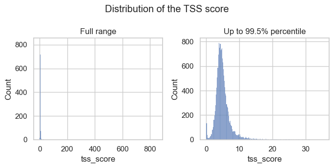
直方图显示，有少数离群值的 TSS 分数极高，还有一个由低 TSS 分数条形码组成的小峰。这两类都是我们想要过滤掉的观测。
为了更好地理解 TSS 分数，我们绘制转录起始位点上下游的转座事件（片段末端）数量。我们使用 muon 中提供的绘图函数 ac.pl.tss_enrichment ，并输入新创建的 tss 对象。为了比较高、低 TSS 分数对应的富集谱，我们向 tss.obs 添加一个新列，其中包含 "TSS_PASS" 或 "TSS_FAIL" 取决于一个阈值，在上文我们确定的低分小峰值中，将观测数据分开。
tss_threshold = 1.5
tss.obs["tss_filter"] = [
"TSS_FAIL" if score < tss_threshold else "TSS_PASS"
for score in atac.obs["tss_score"]
]
# Print number cells not passing nucleosome signal threshold
tss.obs["tss_filter"].value_counts()
TSS_PASS 16483
TSS_FAIL 451
Name: tss_filter, dtype: int64
# Temporarily set different color palette
sns.set_palette(palette="Set1")
ac.pl.tss_enrichment(tss, color="tss_filter")
# reset color palette
sns.set_palette(palette="tab10")
/Users/christopher.lance/mambaforge/envs/scatac_pp/lib/python3.9/site-packages/muon/_atac/plot.py:282: FutureWarning: In a future version of pandas, a length 1 tuple will be returned when iterating over a groupby with a grouper equal to a list of length 1. Don't supply a list with a single grouper to avoid this warning.
for name, group in groups:
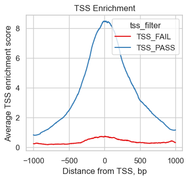
我们可以看到，与高质量细胞相比，TSS 分数低的那 451 个细胞在 TSS 周围的片段富集度大大降低，表明信噪比更低。
让我们打印目前为止创建的对象，并仔细检查所有 QC 分数都已正确添加。
atac
AnnData object with n_obs × n_vars = 16934 × 154027
obs: 'scDblFinder_score', 'AMULET_pVal', 'AMULET_qVal', 'AMULET_negLog10qVal', 'n_features_per_cell', 'total_fragment_counts', 'log_total_fragment_counts', 'nucleosome_signal', 'nuc_signal_filter', 'tss_score'
var: 'gene_ids', 'feature_types', 'genome', 'interval', 'n_cells_by_counts', 'mean_counts', 'pct_dropout_by_counts', 'total_counts'
uns: 'atac', 'files'
现在，让我们在过滤出低质细胞之前保存对象。
# save after calculation of QC metrics
atac.write_h5ad("output/atac_qc_metrics.h5ad")
26.5. 过滤细胞#
QC 指标的取值范围会因样本而异。因此，我们建议以多种方式绘制质量指标，以便对“过滤离群值和低质量细胞的合理阈值”形成良好的判断。
# Reload from file if needed
# atac = sc.read_h5ad("output/atac_qc_metrics.h5ad")
26.5.1. 上限 QC 阈值#
首先，我们绘制 QC 指标的完整取值范围，以识别那些总片段计数或 TSS 分数高得不切实际、或核小体信号过高的条形码。我们已在下面的图中为合适的阈值画上了线，这些阈值是通过查看之前的输出确定的。
# Set thresholds for upper boundaries.
# These were identified by looking at the plots in this code cell before.
total_count_upper = 100000
tss_upper = 50
nucleosome_signal_upper = 2
# Plot total counts of fragments & features colored by TSS score
p1 = sc.pl.scatter(
atac,
x="total_fragment_counts",
y="n_features_per_cell",
size=40,
color="tss_score",
show=False, # so that funstion output axis object where threshold line can be drawn.
)
p1.axvline(x=total_count_upper, c="red") # Add vertical line
# tss.score
p2 = sc.pl.violin(atac, "tss_score", show=False)
p2.set_ylim(0, 200) # zooming in a little to
p2.axhline(y=tss_upper, c="red") # Add horizontal line
# nucleosome signal
p3 = sc.pl.violin(atac, "nucleosome_signal", show=False)
p3.axhline(y=nucleosome_signal_upper, c="red")
plt.show()
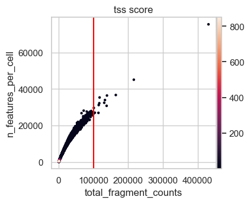
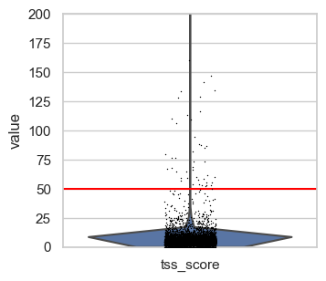
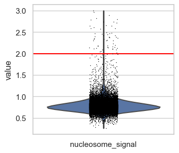
我们设定上界，使得只有极端的离群值会被排除：
total_count_upper = 100000tss_upper = 50nucleosome_signal_upper = 2
请注意，特征数与总片段计数密切相关，因此这一 QC 指标的极端值也会被一并排除。此外，原则上 TSS 分数高是好事，但极高的值很可能是假象。第一张散点图也支持这一点：其中 TSS 分数最高的那个条形码，其片段计数和特征数都非常低。
26.5.2. 下限 QC 阈值#
为了确定 QC 指标的下界，我们绘制 scATAC 数据中最常见的可视化之一，用于识别空液滴和/或低质量细胞。这是一张散点图，显示 TSS 分数随总计数对数的变化。
我们还添加了表示合适阈值的参考线，这些阈值是我们通过查看本图以及下文展示的其他图确定的。
# upper TSS score boundary for plotting
plot_tss_max = 20
# Suggested thresholds (before log transform)
count_cutoff_lower = 1500
lcount_cutoff_upper = 100000
tss_cutoff_lower = 1.5
# Scatter plot & histograms
g = sns.jointplot(
data=atac[(atac.obs["tss_score"] < plot_tss_max)].obs,
x="log_total_fragment_counts",
y="tss_score",
color="black",
marker=".",
)
# Density plot including lines
g.plot_joint(sns.kdeplot, fill=True, cmap="Blues", zorder=1, alpha=0.75)
g.plot_joint(sns.kdeplot, color="black", zorder=2, alpha=0.75)
# Lines thresholds
plt.axvline(x=np.log10(count_cutoff_lower), c="red")
plt.axvline(x=np.log10(lcount_cutoff_upper), c="red")
plt.axhline(y=tss_cutoff_lower, c="red")
plt.show()
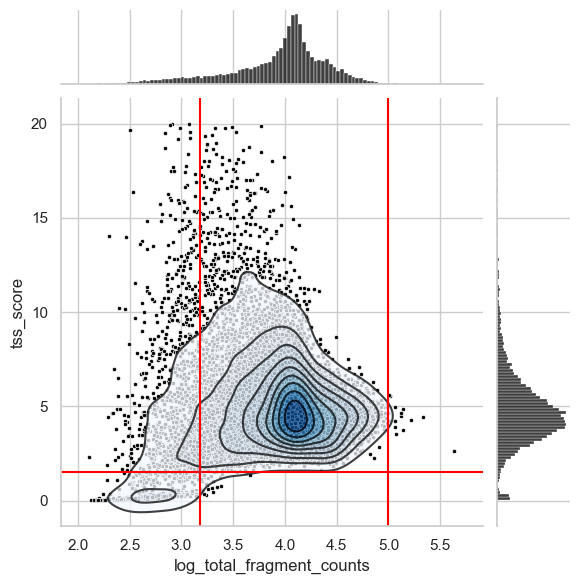
左下角有一群明显的低质量细胞，我们用 1.5 的 TSS 分数阈值把它们过滤掉。此外，我们还截断了每个细胞总计数分布的长长的左尾。为此确定一个理想的阈值有时并不容易。因此，我们建议再生成一些有助于找到合适取值的图。
与 scRNA 数据一样，在经过下游处理步骤后，如果我们观察到仍有太多低质量细胞存在，或者某个预期计数/特征数较低的细胞类型缺失了，就可能需要在迭代过程中优化阈值。
现在，我们再生成一些原始总计数值的直方图，并放大到分布的下尾。
fig, axs = plt.subplots(1, 2, figsize=(7, 3.5))
p1 = sns.histplot(
atac.obs.loc[atac.obs["total_fragment_counts"] < 15000],
x="total_fragment_counts",
bins=40,
ax=axs[0],
)
p1.set_title("< 15000")
p2 = sns.histplot(
atac.obs.loc[atac.obs["total_fragment_counts"] < 3500],
x="total_fragment_counts",
bins=40,
ax=axs[1],
)
p2.set_title("< 3500")
p2.axvline(x=1250, c="black", linestyle="--")
p2.axvline(x=1750, c="black", linestyle="--")
plt.suptitle("Total fragment count per cell")
plt.tight_layout()
plt.show()
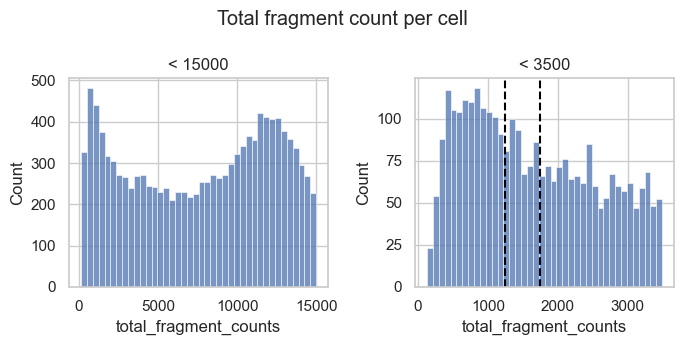
我们观察到一个由总计数很低的条形码组成的峰，它们可能代表低质量条形码。根据右侧的直方图，我们可以选取大约 1250 到 1750 的阈值来去除这个峰。
我们也来看看：总片段数落在该范围内的条形码各有多少特征。我们为总片段计数 1500 画了线，这代表上面建议阈值的一个中间值。
# Scatter plot total fragment count by number of features
n_feature_cutoff = 750 # added after looking at this plot
p2 = sc.pl.scatter(
atac[atac.obs.total_fragment_counts < 3500],
x="total_fragment_counts",
y="n_features_per_cell",
size=100,
color="tss_score",
show=False,
)
p2.axvline(x=count_cutoff_lower, c="red")
p2.axhline(y=n_feature_cutoff, c="red")
plt.show()
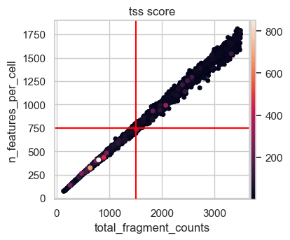
这张散点图显示了总片段计数与每个细胞特征数之间近乎完美的线性关系。考虑到我们数据集中特征总数超过 15 万，750 个特征似乎是一个较为宽松的过滤下界，不至于冒险去掉太多感兴趣的细胞。综合以上各点，我们决定把总计数的下界阈值定为 1500。
26.5.3. 进行过滤#
为了总结分析阈值的结果:
每个细胞的片段计数总数：> 1500 且 < 100 000
每个细胞的特征数目：> 750（相当于 1500 的片段计数总数）
TSS分数: > 1.5和 < 50
核小体信号: < 2
Muon 提供了便捷的功能，可对 .obs 槽中的任意列进行过滤。
print(f"Total number of cells: {atac.n_obs}")
mu.pp.filter_obs(
atac,
"total_fragment_counts",
lambda x: (x >= 1500) & (x <= 100000),
)
print(f"Number of cells after filtering on total_fragment_counts: {atac.n_obs}")
mu.pp.filter_obs(atac, "n_features_per_cell", lambda x: x >= 750)
print(f"Number of cells after filtering on n_features_per_cell: {atac.n_obs}")
Total number of cells: 16934
Number of cells after filtering on total_fragment_counts: 15386
Number of cells after filtering on n_features_per_cell: 15377
mu.pp.filter_obs(
atac,
"tss_score",
lambda x: (x >= 1.5) & (x <= 50),
)
print(f"Number of cells after filtering on tss_score: {atac.n_obs}")
mu.pp.filter_obs(atac, "nucleosome_signal", lambda x: x <= 2)
print(f"Number of cells after filtering on nucleosome_signal: {atac.n_obs}")
Number of cells after filtering on tss_score: 15339
Number of cells after filtering on nucleosome_signal: 15286
26.6. 过滤特征#
最后，我们过滤掉只在极少数细胞中出现的特征。它们大多只会给下游分析增添噪声、并消耗计算资源。
根据 scATAC 处理流程的不同，对特征的过滤要么基于最小的绝对细胞数、要么基于细胞的百分比、要么基于特征的总数（例如最可及的那些）。
让我们做一个小小的思想实验，来确定“某个特征应至少在多少个细胞中出现”这一最小细胞数的合适阈值。假设我们想分析一个罕见的细胞状态，它约占我们整个细胞群体的 2%。考虑到 scATAC 数据有很高的随机漏检（dropout）水平，我们假设这个细胞状态特有的特征只有 5% 的概率被检测到。因此，平均而言，我们预期在“占细胞总数 2% 的那部分细胞”中、约 5% 里检测到这一特征。在我们这个约 15000 个细胞的数据集中，这意味着我们预期与该细胞状态相关的特征只会出现在大约 15 个细胞中。
这一阈值也落在“一个特征应当出现的最小细胞数”的一般范围内，此时有足够的观测，能让下游方法捕捉到有意义的信号。
这里我们选择这个阈值，但请记住，如果你对稀有细胞类型或状态不感兴趣，那么把特征数量减少为“至少出现在 1% 的细胞中”也可能改进你的分析。
和过滤细胞一样，muon 也提供了过滤特征的功能。
mu.pp.filter_var(atac, "n_cells_by_counts", lambda x: x >= 15)
为了确保保留一份原始计数，我们把它们另存为一个单独的层。
atac.layers["counts"] = atac.X
atac
AnnData object with n_obs × n_vars = 15286 × 154015
obs: 'scDblFinder_score', 'AMULET_pVal', 'AMULET_qVal', 'AMULET_negLog10qVal', 'n_features_per_cell', 'total_fragment_counts', 'log_total_fragment_counts', 'nucleosome_signal', 'nuc_signal_filter', 'tss_score'
var: 'gene_ids', 'feature_types', 'genome', 'interval', 'n_cells_by_counts', 'mean_counts', 'pct_dropout_by_counts', 'total_counts'
uns: 'atac', 'files'
layers: 'counts'
最后，我们保存过滤后的 adata 对象，供下一章描述的降维使用。
atac.write_h5ad("output/atac_qc_filtered.h5ad")
26.7. 参考文献#
Huidong Chen, Caleb Lareau, Tommaso Andreani, Michael E. Vinyard, Sara P. Garcia, Kendell Clement, Miguel A. Andrade-Navarro, Jason D. Buenrostro, and Luca Pinello. Assessment of computational methods for the analysis of single-cell ATAC-seq data. Genome Biology, 20(1):241, 2019. URL: https://genomebiology.biomedcentral.com/articles/10.1186/s13059-019-1854-5, doi:10.1186/s13059-019-1854-5.
Pierre-Luc Germain, Aaron Lun, Carlos Garcia Meixide, Will Macnair, and Mark D Robinson. Doublet identification in single-cell sequencing data using scdblfinder. F1000Research, 2021.
Malte D Luecken, Daniel Bernard Burkhardt, Robrecht Cannoodt, Christopher Lance, Aditi Agrawal, Hananeh Aliee, Ann T Chen, Louise Deconinck, Angela M Detweiler, Alejandro A Granados, Shelly Huynh, Laura Isacco, Yang Joon Kim, Dominik Klein, BONY DE KUMAR, Sunil Kuppasani, Heiko Lickert, Aaron McGeever, Honey Mekonen, Joaquin Caceres Melgarejo, Maurizio Morri, Michaela Müller, Norma Neff, Sheryl Paul, Bastian Rieck, Kaylie Schneider, Scott Steelman, Michael Sterr, Daniel J. Treacy, Alexander Tong, Alexandra-Chloe Villani, Guilin Wang, Jia Yan, Ce Zhang, Angela Oliveira Pisco, Smita Krishnaswamy, Fabian J Theis, and Jonathan M. Bloom. A sandbox for prediction and integration of dna, rna, and proteins in single cells. In Thirty-fifth Conference on Neural Information Processing Systems Datasets and Benchmarks Track (Round 2). 2021. URL: https://openreview.net/forum?id=gN35BGa1Rt.
Asa Thibodeau, Alper Eroglu, Christopher S. McGinnis, Nathan Lawlor, Djamel Nehar-Belaid, Romy Kursawe, Radu Marches, Daniel N. Conrad, George A. Kuchel, Zev J. Gartner, Jacques Banchereau, Michael L. Stitzel, A. Ercument Cicek, and Duygu Ucar. AMULET: a novel read count-based method for effective multiplet detection from single nucleus ATAC-seq data. Genome Biology, 22(1):252, September 2021. URL: https://doi.org/10.1186/s13059-021-02469-x (visited on 2022-10-25), doi:10.1186/s13059-021-02469-x.
26.8. 贡献者#
我们衷心感谢以下人员的贡献：
26.8.2. 审阅者#
Lukas Heumos
Anna Schaar